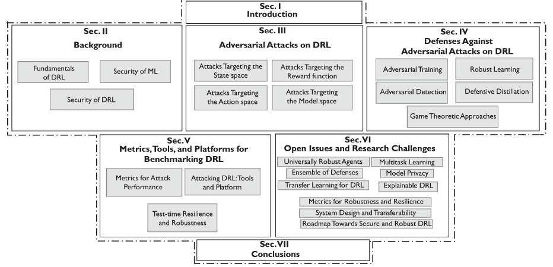
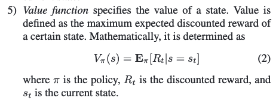
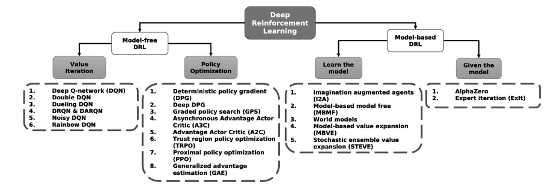

[TOC]
- Title: Challenges and Countermeasures for Adversarial Attacks on Reinforcement Learning
- Author: Inaam Ilahi et. al.
- Publish Year: 13 Sep 2021
- Review Date: Sat, Dec 24, 2022
Summary of paper
Motivation
- DRL is susceptible to adversarial attacks, which precludes its use in real-life critical system and applications.
- Therefore, we provide a comprehensive survey that discusses emerging attacks on DRL-based system and the potential countermeasures to defend against these attacks.
Contribution
- we provide the DRL fundamentals along with a non-exhaustive taxonomy of advanced DRL algorithms
- we present a comprehensive survey of adversarial attacks on DRL and their potential countermeasures
- we discuss the available benchmarks and metrics for the robustness of DRL
- finally, we highlight the open issues and research challenges in the robustness of DRL and introduce some potential research directions .
Some key terms
organisation of this article

Value function

Non-exhaustive taxonomy of major DRL schemes as proposed

why use policy based RL
- advantages
- better convergence properties
- effective in high-dimensional or continuous action spaces. When the space is large, the usage of memory and computation consumption grows rapidly, the policy based RL avoids this because the objective is to learn a set of parameters that is far less than the space count.
- disadvantages
- policy gradient methods tend to more stably converge to a good behaviour. but indeed being on-policy, makes them very sample inefficient.
- Evaluating a policy is typically inefficient and high variance Policy based RL has high variance, but there are techniques to reduce this variance.
attacks on DRL
- reward space
- adding perturbations
- flipping the rewards
adversarial training
- adversarial training includes retraining of the ML model using the adversarial examples along with the legitimate examples. This increases the robustness of the ML against adversarial examples as the model is now able to learn a better distribution.
Major comments
Citation
- RL algorithm also have some limitations to be utilised in practice mainly due to their slow learning process and inability to learn in complex environment.
- ref: Ilahi, Inaam, et al. “Challenges and countermeasures for adversarial attacks on deep reinforcement learning.” IEEE Transactions on Artificial Intelligence 3.2 (2021): 90-109.
- recently, DRL has been vulnerable to adversarial attacks, where an imperceptible perturbation is added to the input to the DRL schemes with a predefined goal of causing a malfunction in the working of DRL
- ref: Ilahi, Inaam, et al. “Challenges and countermeasures for adversarial attacks on deep reinforcement learning.” IEEE Transactions on Artificial Intelligence 3.2 (2021): 90-109.
- there is limited number of research focusing on the reward perturbation influence on the RL agent performance
- ref: Ilahi, Inaam, et al. “Challenges and countermeasures for adversarial attacks on deep reinforcement learning.” IEEE Transactions on Artificial Intelligence 3.2 (2021): 90-109.
- With regard to handling reward perturbation, this work utilized a neural network to estimate the actual reward of the environment and therefore detect and filter out abnormal rewards.
- ref: Kumar, Aashish. Enhancing performance of reinforcement learning models in the presence of noisy rewards. Diss. 2019.
- Dogru, Oguzhan, Ranjith Chiplunkar, and Biao Huang. “Reinforcement learning with constrained uncertain reward function through particle filtering.” IEEE Transactions on Industrial Electronics 69.7 (2021): 7491-7499.